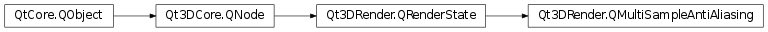

Qt3DRender.QMultiSampleAntiAliasing¶
Detailed Description¶
Enable multisample antialiasing
A
Qt3DRender.QMultiSampleAntiAliasingclass enables multisample antialiasing.It can be added to a
QRenderPassby callingQRenderPass.addRenderState():QRenderPass *renderPass = new QRenderPass(); QMultiSampleAntiAliasing *msaa = new QMultiSampleAntiAliasing(); renderPass->addRenderState(msaa);Or a
QRenderStateSetby callingQRenderStateSet.addRenderState():QRenderStateSet *renderStateSet = new QRenderStateSet(); QMultiSampleAntiAliasing *msaa = new QMultiSampleAntiAliasing(); renderStateSet->addRenderState(msaa);For multisampling to take effect, the render target must have been allocated with multisampling enabled:
QTexture2DMultisample *colorTex = new QTexture2DMultisample; colorTex->setFormat(QAbstractTexture::RGBA8_UNorm); colorTex->setWidth(1024); colorTex->setHeight(1024); QRenderTargetOutput *color = new QRenderTargetOutput; color->setAttachmentPoint(QRenderTargetOutput::Color0); color->setTexture(colorTex); QTexture2DMultisample *depthStencilTex = new QTexture2DMultisample; depthStencilTex->setFormat(QAbstractTexture::RGBA8_UNorm); depthStencilTex->setWidth(1024); depthStencilTex->setHeight(1024); QRenderTargetOutput *depthStencil = new QRenderTargetOutput; depthStencil->setAttachmentPoint(QRenderTargetOutput::DepthStencil); depthStencil->setTexture(depthStencilTex); Qt3DRender::QRenderTarget *renderTarget = new Qt3DRender::QRenderTarget; renderTarget->addOutput(color); renderTarget->addOutput(depthStencil);Further, the shader code must use multisampling sampler types and texelFetch() instead of texture().
For example, if you have code like
you can rewrite it as
Note
When using OpenGL as the graphics API, glEnable(GL_MULTISAMPLE) will be called if
QMultiSampleAntiAliasinghas been added to the render states.
-
class
PySide2.Qt3DRender.Qt3DRender.QMultiSampleAntiAliasing([parent=nullptr])¶ Parameters: parent – PySide2.Qt3DCore.Qt3DCore::QNodeThe constructor creates a new
QMultiSampleAntiAliasing.QMultiSampleAntiAliasinginstance with the specifiedparent.
© 2018 The Qt Company Ltd. Documentation contributions included herein are the copyrights of their respective owners. The documentation provided herein is licensed under the terms of the GNU Free Documentation License version 1.3 as published by the Free Software Foundation. Qt and respective logos are trademarks of The Qt Company Ltd. in Finland and/or other countries worldwide. All other trademarks are property of their respective owners.